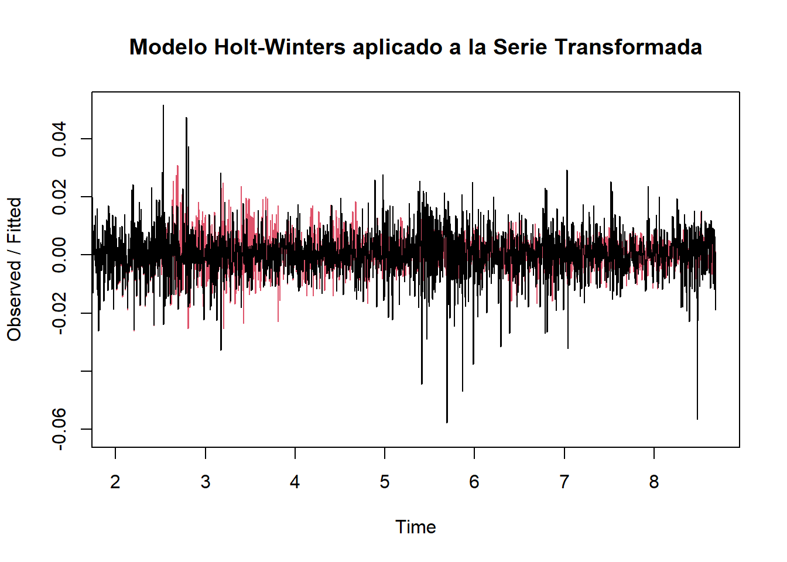
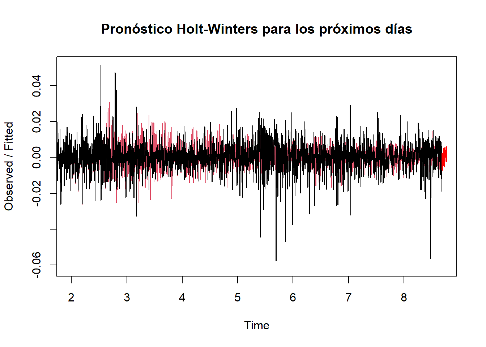
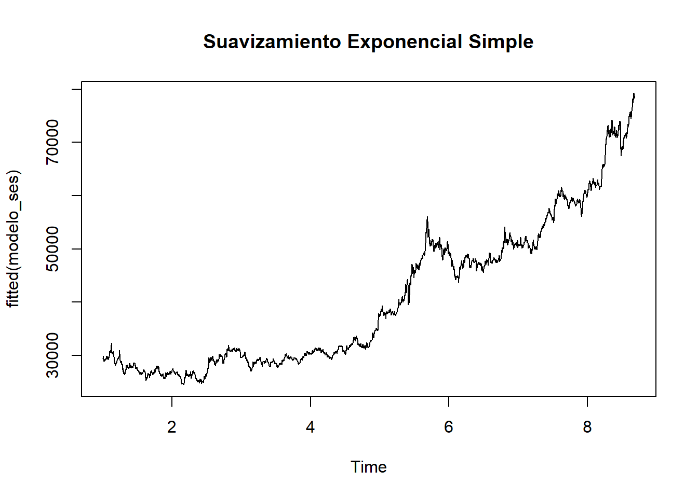
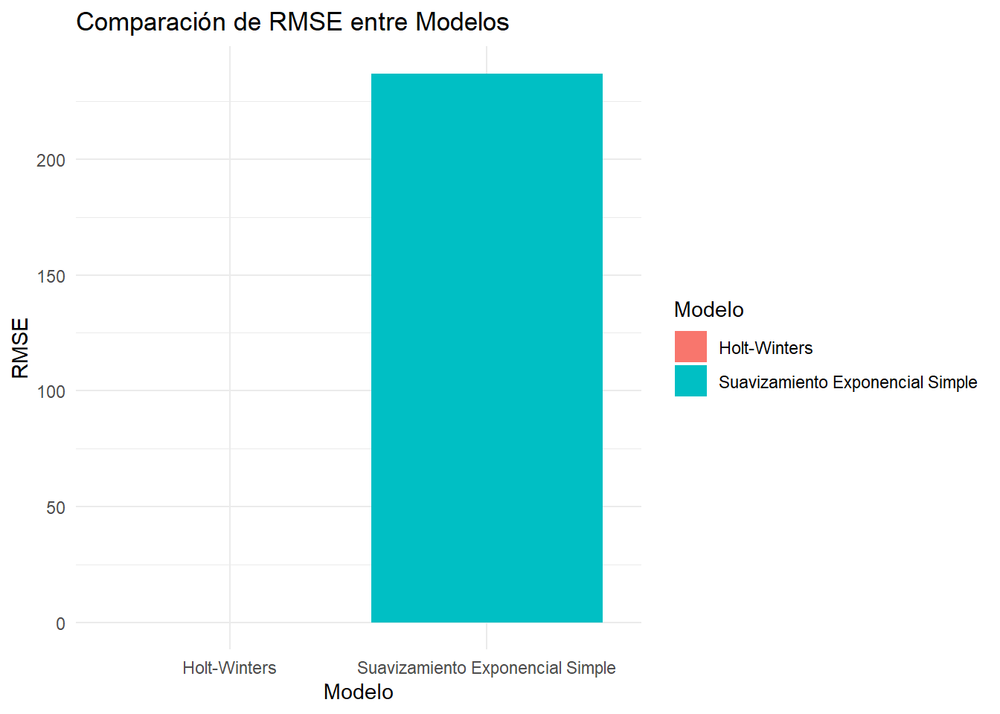

Chapter 5 Pronóstico de Series de Tiempo Holt-Winters
5.1 Aplicar el modelo de Holt-Winters
Dado que la estacionalidad parece mantenerse relativamente constante en magnitud, un modelo aditivo podría ser la mejor opción. 
5.2 Evaluar el ajuste del modelo
Holt-Winters exponential smoothing with trend and additive seasonal component.
Call:
HoltWinters(x = ts_log_diff, seasonal = "additive")
Smoothing parameters:
alpha: 0.002485839
beta : 0.002304457
gamma: 0.3500246
Coefficients:
[,1]
a 1.089413e-03
b 2.932241e-07
s1 -6.006596e-03
s2 1.246027e-03
s3 -8.027069e-03
s4 -2.008704e-03
s5 2.991473e-04
s6 -8.319845e-04
s7 -8.802151e-05
s8 -2.843903e-05
s9 -4.982854e-03
s10 -2.517230e-03
s11 -2.391878e-03
s12 -5.668210e-03
s13 -1.517069e-03
s14 4.203068e-03
s15 -5.860747e-03
s16 -4.513237e-03
s17 -6.195080e-03
s18 2.270634e-03
s19 -9.076049e-04
s20 1.097961e-03
s21 -4.155383e-04
s22 1.418486e-03
s23 2.978348e-03
s24 1.081771e-03
s25 2.798766e-03
s26 2.399658e-03
s27 8.182494e-04
s28 4.736225e-03
s29 -3.317307e-03
s30 1.932720e-03
s31 3.491386e-03
s32 -5.864551e-03
s33 -2.540030e-03
s34 -3.128440e-03
s35 1.668221e-04
s36 4.548463e-03
s37 -8.277647e-03
s38 6.471696e-03
s39 3.618264e-03
s40 -5.832373e-03
s41 3.544630e-03
s42 6.176063e-04
s43 3.768946e-03
s44 3.233909e-03
s45 -8.607834e-03
s46 1.886078e-03
s47 -4.186039e-03
s48 -4.515139e-03
s49 -4.135955e-03
s50 -6.368050e-03
s51 -8.977087e-04
s52 -3.290024e-03
s53 1.113716e-03
s54 -3.342337e-03
s55 3.626755e-03
s56 -3.965273e-04
s57 -2.075680e-03
s58 -2.754280e-03
s59 -1.405891e-03
s60 4.118341e-03
s61 4.136166e-03
s62 5.349444e-04
s63 -1.192350e-04
s64 3.438841e-03
s65 -8.287332e-04
s66 -6.952767e-03
s67 -2.787879e-04
s68 -1.830619e-03
s69 1.436565e-03
s70 6.209574e-04
s71 -5.218110e-04
s72 3.209954e-03
s73 -1.704215e-03
s74 -1.688774e-03
s75 2.952404e-04
s76 -3.293497e-03
s77 -4.826419e-03
s78 -2.566117e-03
s79 -4.163923e-03
s80 -5.329070e-03
s81 -2.842959e-03
s82 -6.989766e-03
s83 -1.787856e-03
s84 -2.049335e-03
s85 1.667841e-03
s86 4.879011e-03
s87 4.247008e-03
s88 -3.933419e-04
s89 3.012296e-05
s90 -5.543990e-03
s91 6.826864e-03
s92 8.567619e-05
s93 -2.883496e-04
s94 4.622209e-03
s95 5.927811e-03
s96 1.775474e-03
s97 8.635489e-04
s98 -1.558136e-03
s99 -3.130259e-04
s100 -1.621674e-03
s101 1.923294e-03
s102 -1.312027e-03
s103 -3.636532e-04
s104 -3.493332e-03
s105 3.553864e-03
s106 3.928525e-03
s107 4.448884e-06
s108 -4.001756e-03
s109 4.056982e-04
s110 -6.927393e-03
s111 1.478844e-05
s112 -4.999524e-03
s113 -3.199070e-03
s114 3.233633e-03
s115 6.957504e-04
s116 1.863936e-03
s117 -4.423341e-04
s118 1.509581e-03
s119 2.021815e-03
s120 -1.846520e-03
s121 -8.005496e-04
s122 1.547061e-03
s123 7.182702e-04
s124 3.714035e-03
s125 -4.027189e-03
s126 5.717808e-03
s127 1.090861e-03
s128 -6.418397e-03
s129 -6.786928e-03
s130 -2.867290e-04
s131 6.528340e-05
s132 -6.009571e-03
s133 -6.327125e-03
s134 -2.976976e-04
s135 -4.604251e-03
s136 6.340743e-03
s137 -3.164186e-03
s138 -1.556197e-03
s139 -2.462869e-04
s140 1.099738e-03
s141 1.735485e-03
s142 -5.319717e-04
s143 -3.608170e-03
s144 1.684462e-03
s145 -1.790658e-03
s146 -3.481895e-03
s147 -1.779749e-03
s148 5.323218e-04
s149 -6.065902e-03
s150 1.716859e-03
s151 1.219301e-03
s152 -1.874268e-04
s153 3.829110e-04
s154 -4.783010e-03
s155 1.612731e-05
s156 2.364233e-03
s157 -2.213734e-03
s158 -5.597966e-03
s159 -3.821089e-03
s160 -1.373256e-03
s161 -1.532013e-03
s162 -1.285978e-03
s163 -8.144388e-04
s164 -5.205727e-04
s165 -6.249899e-03
s166 -4.720708e-04
s167 -1.068796e-03
s168 4.517868e-03
s169 -6.817660e-04
s170 -1.010070e-03
s171 1.062472e-03
s172 -1.666314e-03
s173 -1.761655e-03
s174 -4.016522e-03
s175 1.751336e-03
s176 -2.530273e-03
s177 -2.995931e-03
s178 -1.441361e-03
s179 -1.575449e-03
s180 3.343202e-03
s181 4.673575e-04
s182 -2.332107e-03
s183 -5.178601e-04
s184 3.990410e-04
s185 -2.133255e-03
s186 -2.094731e-03
s187 -3.896340e-04
s188 1.691047e-03
s189 3.578948e-03
s190 3.145779e-03
s191 9.474957e-04
s192 1.053631e-02
s193 6.194174e-03
s194 3.225156e-03
s195 -2.621365e-04
s196 -5.642724e-03
s197 -3.521495e-03
s198 1.971002e-03
s199 -1.263471e-03
s200 -4.996198e-03
s201 1.445967e-03
s202 -1.776308e-03
s203 -2.344029e-03
s204 1.617864e-03
s205 1.496596e-03
s206 3.895873e-04
s207 1.367554e-03
s208 6.668821e-04
s209 7.164653e-03
s210 6.009623e-04
s211 4.941777e-03
s212 1.448600e-03
s213 2.806936e-04
s214 3.264814e-03
s215 1.906557e-03
s216 3.418660e-03
s217 1.675327e-03
s218 -4.675610e-04
s219 1.636577e-03
s220 1.025650e-03
s221 4.536027e-03
s222 -7.222599e-03
s223 1.978078e-03
s224 4.081899e-04
s225 -8.286500e-03
s226 -3.140769e-03
s227 -1.379760e-03
s228 1.154232e-03
s229 2.159571e-03
s230 -9.453017e-04
s231 -7.979058e-03
s232 2.316149e-03
s233 1.598635e-03
s234 3.908913e-03
s235 -2.312142e-04
s236 -2.748607e-03
s237 -2.734734e-03
s238 2.348458e-03
s239 4.225311e-03
s240 -3.015748e-03
s241 1.325424e-03
s242 5.357783e-03
s243 -2.807670e-03
s244 3.766172e-04
s245 2.572036e-03
s246 -2.820223e-03
s247 -1.376490e-03
s248 -8.239365e-03
s249 -4.164638e-03
s250 4.483667e-03
s251 2.821301e-03
s252 -7.563843e-04
s253 -4.815051e-03
s254 -1.482879e-03
s255 -6.479020e-04
s256 1.904108e-04
s257 7.269574e-03
s258 -1.332769e-03
s259 -1.267300e-02
s260 1.151918e-03
s261 3.742435e-03
s262 -1.276083e-03
s263 -2.962657e-03
s264 1.202684e-03
s265 -5.404705e-03
s266 -1.201425e-03
s267 -4.251649e-04
s268 1.224813e-03
s269 -1.556155e-03
s270 -4.681736e-04
s271 -2.782047e-04
s272 5.754108e-04
s273 3.111046e-03
s274 -1.026666e-03
s275 -6.760200e-04
s276 4.071437e-04
s277 4.175353e-03
s278 8.792565e-04
s279 5.073616e-03
s280 -7.421275e-03
s281 1.774829e-03
s282 6.881177e-04
s283 3.107676e-03
s284 -2.868630e-04
s285 6.902304e-05
s286 -1.576864e-03
s287 -6.977841e-03
s288 -1.431227e-03
s289 -3.422035e-03
s290 2.303711e-04
s291 -2.099472e-02
s292 -1.913143e-03
s293 -1.018591e-02
s294 -3.793987e-04
s295 -3.440800e-03
s296 3.155613e-03
s297 6.781983e-03
s298 -4.108567e-04
s299 -7.199217e-04
s300 -2.394237e-03
s301 -2.883362e-03
s302 -2.214664e-03
s303 4.433837e-03
s304 5.107056e-03
s305 1.241961e-02
s306 1.367940e-03
s307 -1.945525e-03
s308 2.441708e-03
s309 4.906486e-03
s310 -9.646508e-04
s311 -2.485936e-03
s312 -3.654577e-03
s313 5.801343e-03
s314 5.102399e-04
s315 -4.792061e-03
s316 2.043459e-03
s317 1.541670e-03
s318 -3.122704e-03
s319 -2.867022e-03
s320 -3.901920e-04
s321 1.300472e-03
s322 4.471014e-03
s323 -1.906607e-03
s324 -9.640947e-04
s325 4.372890e-03
s326 2.069463e-03
s327 5.685469e-03
s328 1.156968e-03
s329 -1.134836e-03
s330 -1.904866e-03
s331 6.317813e-04
s332 4.595586e-04
s333 -1.184284e-03
s334 -2.263029e-03
s335 1.389792e-03
s336 2.296295e-04
s337 -1.289288e-03
s338 -9.413028e-04
s339 -3.015608e-03
s340 6.278056e-03
s341 1.036939e-03
s342 -2.959538e-05
s343 -2.879698e-03
s344 -1.353353e-03
s345 -7.789647e-04
s346 2.896824e-04
s347 2.471600e-03
s348 -1.098229e-03
s349 2.362386e-03
s350 -3.925777e-03
s351 4.200022e-04
s352 2.197899e-03
s353 5.045656e-03
s354 2.037612e-03
s355 -3.418948e-03
s356 3.011355e-04
s357 -8.320141e-04
s358 4.497465e-04
s359 1.889811e-03
s360 1.505183e-03
s361 -1.171691e-03
s362 2.253164e-04
s363 -2.040684e-03
s364 -2.479558e-04
s365 -6.832495e-03- alpha = 0.0025:Indica que la serie da muy poca importancia a los valores recientes en el suavizamiento. Podría ser porque la serie ya está bastante estable después de la transformación.
- beta = 0.0023: La tendencia es muy baja, lo que indica que el modelo no detecta un crecimiento claro después de la diferenciación.
- gamma = 0.3500 → La componente estacional tiene moderada importancia, lo que confirma que el precio del oro muestra fluctuaciones repetitivas
5.3 Pronostico con Holt-Winters

La línea roja indica el ajuste del modelo sobre la serie temporal. El modelo captura bastante bien la variabilidad
5.4 Aplicación de suavizado exponencial simple

Este método da más peso a los valores recientes, lo que ayuda a capturar cambios sin reaccionar bruscamente a fluctuaciones aleatorias. El modelo Holt-Winters añade tendencia y estacionalidad, mientras que el suavizamiento exponencial simple solo suaviza la serie.
5.5 Comparación de modelos
Calcular el error del modelo Holt-Winters
ME RMSE MAE MPE MAPE ACF1 Theil's U
Test set -0.0001721535 0.009329245 0.006690136 NaN Inf -0.02887819 NaNCalcular el error del Suavizamiento Exponencial Simple
ME RMSE MAE MPE MAPE ACF1 Theil's U
Test set 17.38552 353.6919 237.0729 0.03154244 0.5845796 -0.004346762 0.999267 Modelo MAE RMSE
1 Holt-Winters 9.329245e-03 6.690136e-03
2 Suavizamiento Exponencial Simple 3.536919e+02 2.370729e+02RMSE: 353.69 en modelo SAS, el modelo no ajusta bien la variabilidad de la serie.
MAE: 237.07 También más alto en modelo SAS, indicando errores más grandes en la predicción.
5.6 Conclusiones

- Holt-Winters tiene un desempeño mucho mejor en términos de error.
- SES muestra un error muy alto, lo que indica que no captura bien la estructura de la serie. Esto es lógico, ya que el suavizamiento exponencial simple no considera estacionalidad ni tendencia, mientras que Holt-Winters sí lo hace.